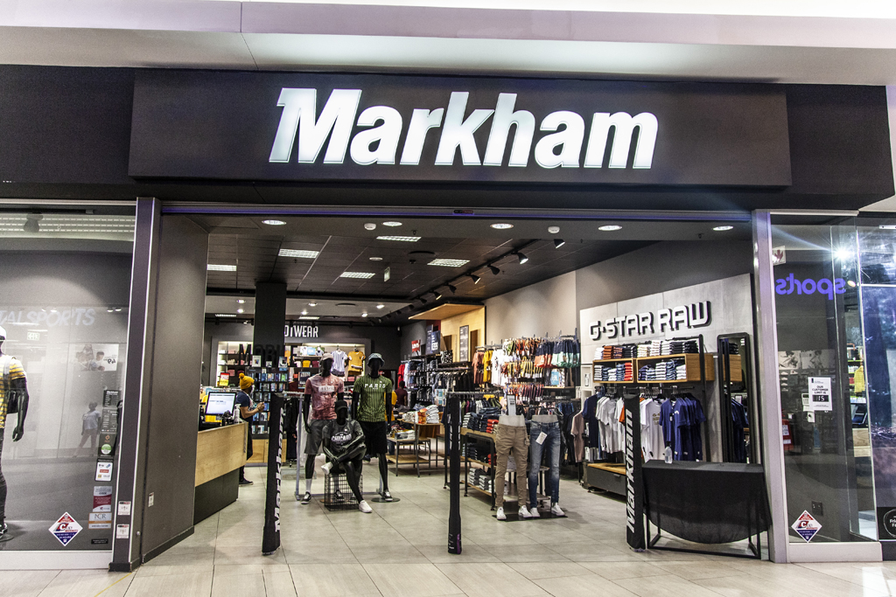
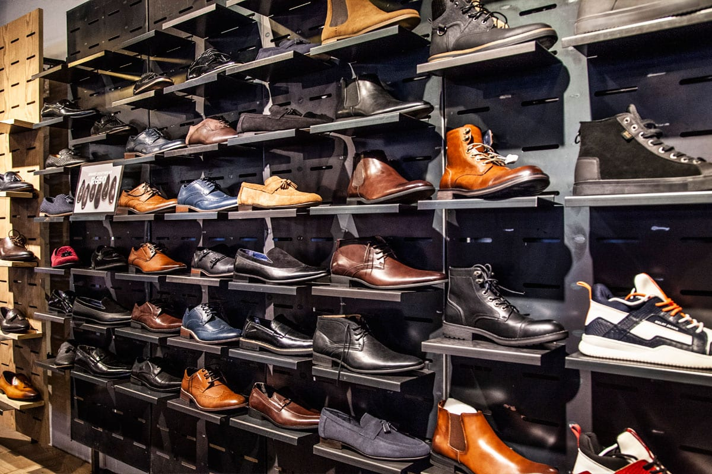
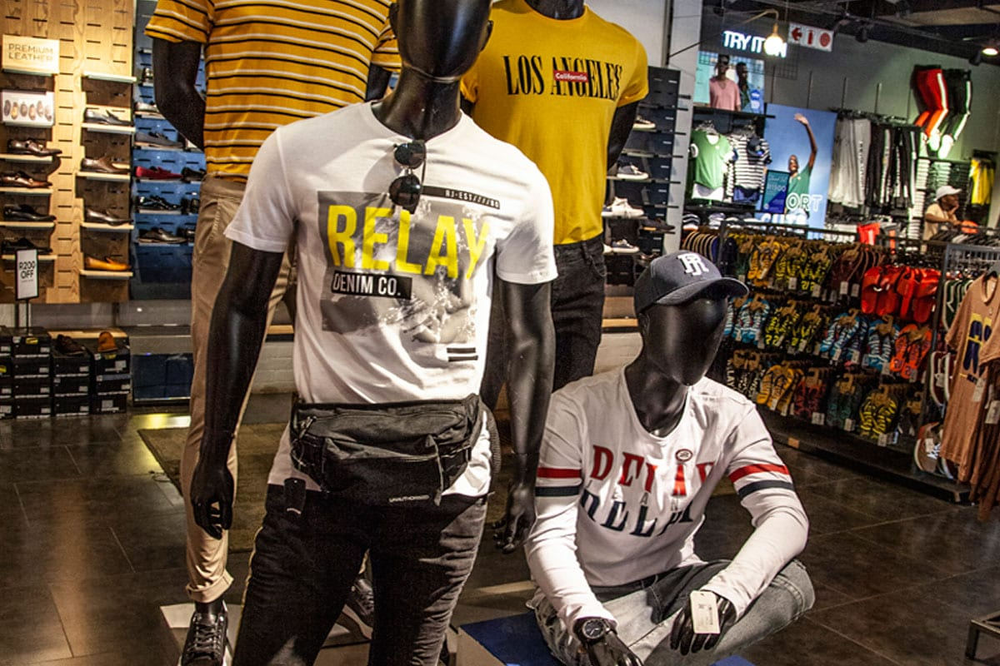
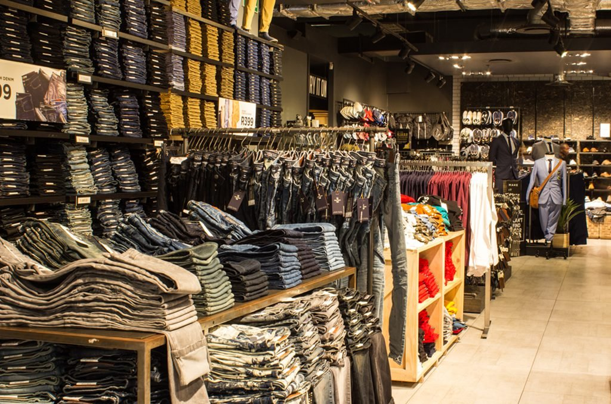

MARKHAM
TFG Limited, also known as The Foschini Group, is a South African JSE listed retail clothing group, which trades under various brands and has more than 3,000 stores within its portfolio.
In March 2016, TFG acquired the British chain Whistles with its 46 retail shops.
On 5 October 2021, it was reported that TymeBank would open approximately 600 banking service kiosks in TFG retail outlets in 2022.
LOCATION
SHOP:L6 Located next to Edgars